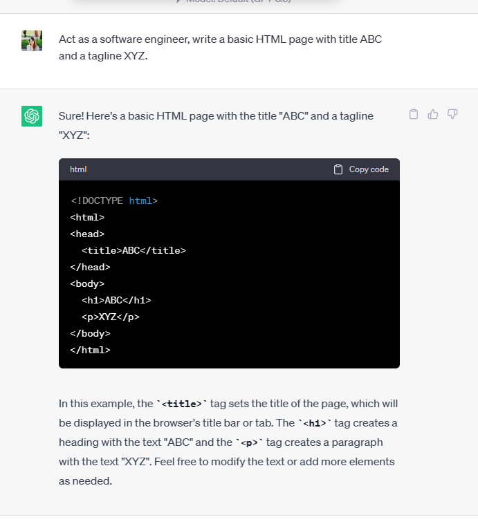
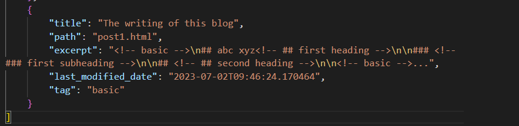
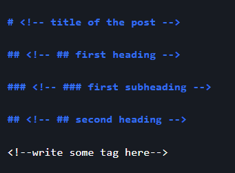

A simple implementation of a static-site generator
The framework of this blog⌗
TL;DR: there are other Content Management Systems (CMS) out there, some popular ones are WordPress, Wix, etc. Most are backend reliant, but there are exceptions, one is Showcase | Hugo (gohugo.io). For this blog, I implemented my own framework to use just the basics. ChatGPT is involved, and one does not need to know how to code to use it.
The idea⌗
I want something lightweight, something that I set up once and then I can focus on the writing. It might seem counter-intuitive at this point, shouldn’t I just use an out-of-the-box solution like wordpress. Eventually it checks out most of the box, but it needs a backend server to run. Usually, it involves some money costs, that I didn’t want to pay at the time. Okay, it can be free, but with a lot of tweaking.
In retrospect, I didn’t know about Showcase | Hugo (gohugo.io), which is a static site generator. It’s a framework that generates a static website. I might have been reinventing the wheel, but what’s the harm in it. I learned a whole bunch, it’s a good experience.
The stacks⌗
I will stick with free tools, and here are the assumptions:
- Github page is free.
- I have ChatGpt plus subscription.
- I know the frontend stacks (HTML, CSS, JS).
- I have an existing brand BAO Photography
Other JS frameworks, like React, Angular are a little excessive for my purpose.
So, let’s create a framework that generates static HTML pages, and then host them on Github page. Point the subdomain of the existing brand to the github page, and we can leverage ChatGPT to do the hardwork, writing most of the code.
The excerpt in the headline might be a little click-baity. One does not need to code, but knowing where which component should be is vital.
The setup⌗
I will provide step-by-step instructions, following-along is not a must or recommended 😆 My friends call me a troll sometimes, sorry. The reason is that creating your own framework is not the purpose of this post. Let’s just use Hugo, or other out-of-the-box solutions, if you need and focus on the writing here.
The step-by-step instructions followed is, admitedly, not good. There might be gap, and assumed knowledge.
1. Let’s start with the basic HTML page⌗
Ask ChatGPT or your favorite LLM to generate a basic HTML page with a simple prompt:
you: “Act as a software engineer, write a basic HTML page with title ABC and a tagline XYZ.” ChatGPT: “oh jeez, please do it yourself, I’m not a web developer.”
….
ChatGPT: “okay, I’ll try my best, but don’t expect too much.”
….
ChatGPT: “here you go, I’m done.”
Sorry for the unamusing joke there, but I trust your LLM can do it.

At this step, you can also add a stylesheet, and other components on the HTML page. For the blog, I added a container for the list of blog posts.
2. How do we present a blog post?⌗
Wordpress has a notion of post and page. I will do something similar, let’s present a blog post as an html page, and give the summary as an entry in the container above.
I like markdown, and had experience with it. So, I will use markdown to write the blog post. I then I will ask ChatGPT to give me a script, using Python, to convert the markdown to HTML. The end result is something like this blog/markdown-to-html.py at main - Hank-TNguyen/blog (github.com) after a lot of iterations. It does a couple of extra things. It will compile the list of blog posts, and generate a json file that contains the metadata of the posts.

3. Let’s display what we have on the main page⌗
We need to populate the container of the blog post in the main page. The json containing the metadata earlier will be used to populate the container. This needs to happen “relatively” dynamically when the client loads the page. Each of the entry for a post in this container will provide a link to the actual post. What I ended up doing is to use an iframe in the same main page to display the post. When you see this page, you are actually in an iframe, and the main page is in the background. All posts are loaded at startup time. This is not a worry, I know this is a one-person blog, I figure I will probably have a handful of posts. This setup will probably still be fast.
“relatively” is in quotes, because all assets are static, dynamic is in the sense that we load the json file and populate the html container.
4. Let’s write the first post⌗
As I mentioned, I will use markdown. I asked ChatGPT to give me a powershell script to create a file with a template, a really fancy one I create 😆.

The script will create a file with the name of the post, it follows a simple rule, get other posts and increment the number. The content is the template above. The script ended up looking like this blog/WritePost.ps1 at main - Hank-TNguyen/blog (github.com).
5. Execute scripts and publish⌗
If you check out the github repository Hank-TNguyen/blog: Blog (github.com), you can test this locally. Following are the commands I execute when writing a new post
.\WritePost.ps1 ;
python markdown-to-html.py;
git add . ;
git push ;
Summary⌗
That was simple enough. Let’s summarize what we did. We created a framework that generates static HTML pages, and then host them on Github page. We can leverage ChatGPT to do the hardwork, writing most of the code, but still I’m not too worried about my job security, I need to tell ChatGPT what to write. It turns out to be a pretty good, knowledgeable intern in this setup.

Without ChatGPT, this framework would probably take me a few days to materialize. I did all this in an evening and now spend most of the time on the content. As per the risk of AI taking over our jobs discussion, I think it is somewhat overblown. I think we will be fine, we just need to adapt and learn new skills. It increases productivity in certain setups for sure, but when the context gets more complex, I have yet to find it too useful.